library(tidyverse)
library(easystats)8 Punktmodelle 2
8.1 Lernsteuerung
8.1.1 Standort im Lernpfad
Abbildung 1.2 zeigt den Standort dieses Kapitels im Lernpfad und gibt damit einen Überblick über das Thema dieses Kapitels im Kontext aller Kapitel.
8.1.2 Lernziele
- Sie können die Begriffe Kovarianz und Korrelation definieren und ihren Zusammenhänge erläutern.
- Sie können die Stärke einer Korrelation einschätzen.
8.1.3 Benötigte R-Pakete
In diesem Kapitel benötigen Sie folgende R-Pakete.
8.1.4 Benötigte Daten
mariokart <- read.csv("https://vincentarelbundock.github.io/Rdatasets/csv/openintro/mariokart.csv")8.1.5 Zum Einstieg
Beispiel 8.1
- Suchen Sie sich eine vertrauenwürdige Partnerin oder einen vertrauenswürdigen Partner. Im Zweifel reicht die Person, die neben Ihnen sitzt. 😁
- Nennen Sie zwei Variablen, die wie folgt zusammenhängen:
- gleichsinnig (Viel von dem einen, viel von dem anderen)
- gegensinnig (viel von dem einen, wenig von dem anderen)
- Scheinzusammenhang (hängt zusammen, ist aber nicht “echt” bzw. kausal)
8.2 Zusammenfassen zum Zusammenhang
In Kapitel 6 haben wir gelernt, dass das Wesen eines Punktmodells als Zusammenfassung einer Spalte (eines Vektors) zu einer einzelnen Zahl1, zu einem “Punkt” sozusagen, zusammengefasst werden kann.
In diesem Kapitel fassen wir zwei Spalten zusammen, wieder zu einer Zahl, s. Gleichung 8.1.
\[\begin{array}{|c|} \hline \\ \hline \\\\\\ \hline \end{array} + \begin{array}{|c|} \hline \\ \hline \\\\\\ \hline \end{array} \qquad \rightarrow \qquad \begin{array}{|c|} \hline \\ \hline \hline \end{array} \tag{8.1}\]
Wo wir in Kapitel 6 eine Variable mit Hilfe eines Lagemaßes beschrieben (bzw. dargestellt, zusammengefasst, modelliert) haben, tun wir hier das Gleiche für zwei Variablen. Beschreibt man aber zwei Variablen, so geht es um die Frage, was die beiden Variablen miteinander zu tun haben: Wie die beiden Variablen von einander abhängen bzw. miteinander (irgendwie) zusammenhängen. Wir begrenzen auf metrische Variablen.
8.2.1 Beispiele für Zusammenhänge
- Lernzeit und Klausurerfolg
- Körpergröße und Schuhgröße
- Verbrauchtes Benzin und zurückgelegte Strecke
- Produktionsmenge und Produktionskosten
- Bildschirmzeit und Schlafqualität
- Umweltschutz und Biodiversifität \(\square\)
Die Verbildlichung2 zweier metrischer Variablen haben wir bereits in Kapitel 5.5.2 kennengelernt. Zur Verdeutlichung, wie ein Zusammenhang zweier metrischer Variablen aussehen kann, helfe noch einmal Abbildung 8.1.
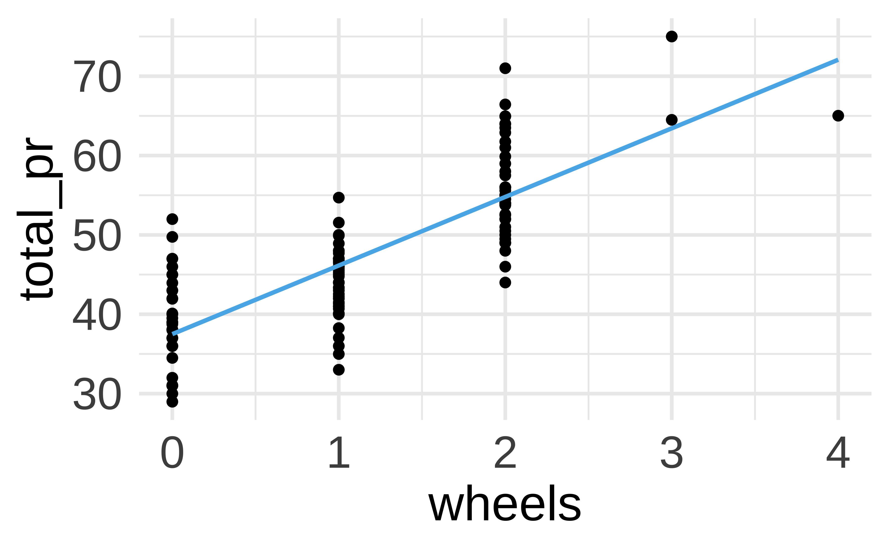
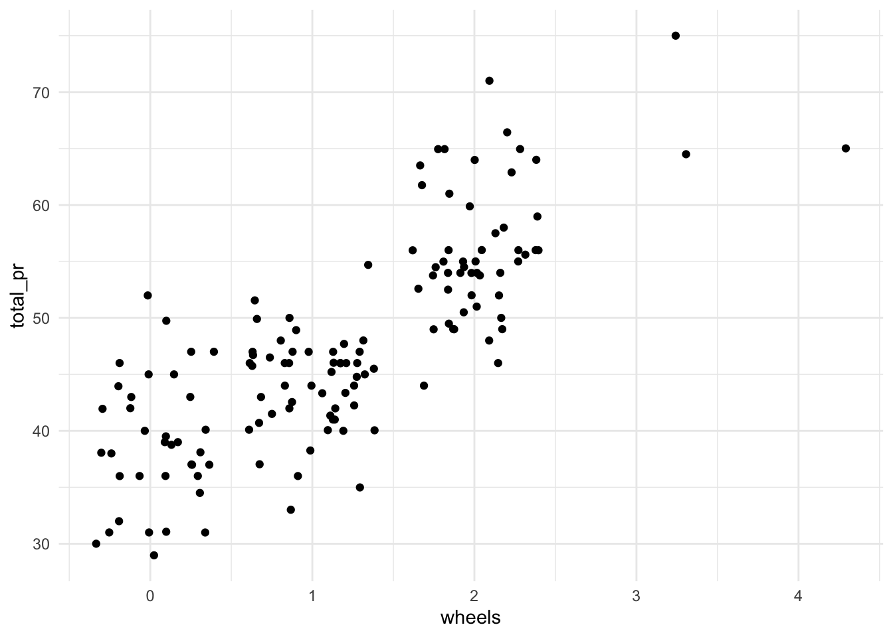
8.3 Abweichungsrechtecke
Die Stärke des linearen Zusammenhangs zweier metrischer Variablen kann man gut mithilfe von Abweichungsrechtecken veranschaulichen. Los geht’s!
8.3.1 Noten und Abweichungsrechtecke
Beispiel 8.2 (Wieder Statistiknoten) Anton, Bert, Carl und Daniel haben ihre Statistikklausur zurückbekommen. Die Lernzeit \(X\) scheint mit der erreichten Punktzahl \(Y\) (0-100, je mehr desto besser) zusammenzuhängen.3 Gar nicht so schlecht ausgefallen, s. Tabelle 8.1.\(\square\)
| id | y | x |
|---|---|---|
| 1 | 72 | 70 |
| 2 | 44 | 40 |
| 3 | 39 | 35 |
| 4 | 50 | 67 |
Zeichnen wir uns die Daten als Streudiagramm, s. Abbildung 8.2. Dabei zeichnen wir noch Abweichungsrechtecke ein.
Definition 8.1 (Abweichungsrechteck) Im zweidimensionalen Fall spannt sich ein Abweichungsrechteck vom Mittelwert \(\bar{x}\) bis zum Messwert \(x_i\) und genauso für \(Y\). Wir bezeichnen mit \(dx_i\) die Distanz (Abweichung) vom Mittelwert \(\bar{x}\) bis zum Messwert \(x_i\) (und analog \(dy_i\)), also \(dx_i = x_i - \bar{x}\). Die Fläche des Abweichungsrechtecks ist dann das Produkt der Abweichungen: \(dx_i \cdot dy_i\).\(\square\)
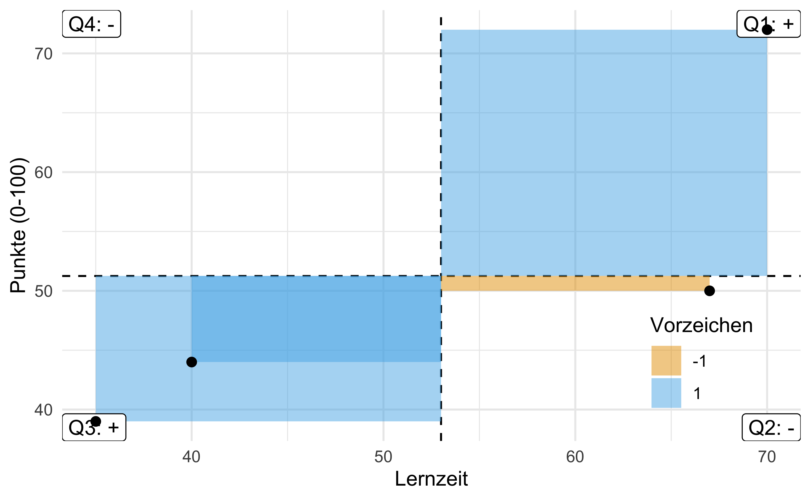
Stellen Sie sich vor, wir legen alle Rechtecke zusammen aus Abbildung 8.2. Nennen wir das resultierende Rechteck das “Summenrechteck”. Ja, ich weiß, ich strapaziere mal wieder Ihre Phantasie4. Jetzt kommt’s: Je größer die Fläche des Summenrechtecks, desto stärker der (lineare) Zusammenhang.
Beachten Sie, dass die Flächen Vorzeichen haben, positiv oder negativ (Plus oder Minus), je nach dem, in welchem der vier Quadranten sie stehen. Die Füllfarben der Rechtecke verdeutlichen dies, s. Abbildung 8.2. Das Vorzeichen der Summe zeigt an, ob der Zusammenhang positiv (gleichsinnig, ansteigende Trendlinie) oder negativ (gegensinnig, absinkende Trendlinie) ist. So zeigt Abbildung 8.3 links eine positive Summe der Abweichungsrechtecke und rechts eine negative Summe. Man sieht im linken Diagramme, dass die Summe der Rechtecke mit positivem Vorzeigen (rot) überwiegt; im rechten Diagramm ist es umgekehrt (blau, negativ überwiegt).
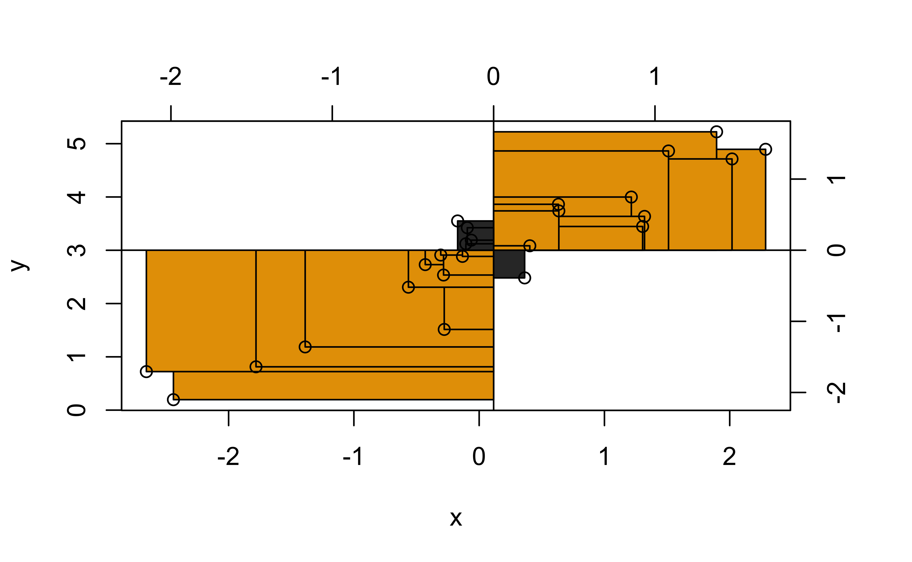
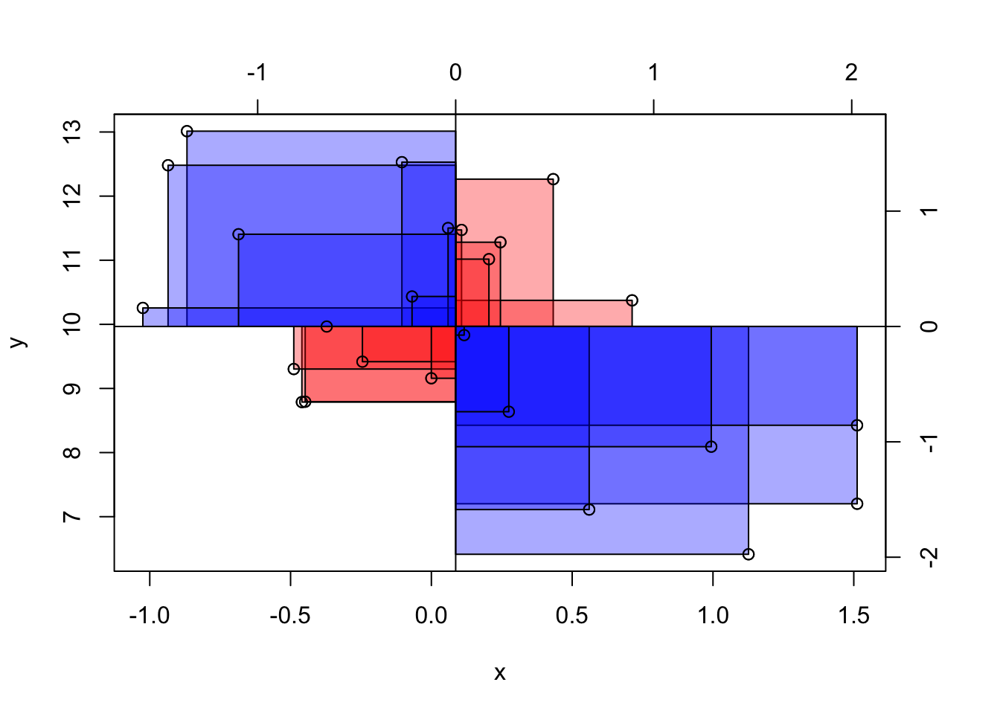
Wir können das Summenrechteck noch durch die Anzahl der Datenpunkte teilen, das ändert nichts an der Aussage, aber der Mittelwert hat gegenüber der Summe den Vorteil, dass er unabhängig ist in seiner Aussage von der Anzahl der eingegangenen Datenpunkte. Das resultierende Rechteck nennen wir das mittlere Abweichungsrechteck.
Ein Maß für den Zusammenhang von Lernzeit und Klausurpunkte ist also die Fläche des mittleren Abweichungsrechtecks, s. Abbildung 8.4.
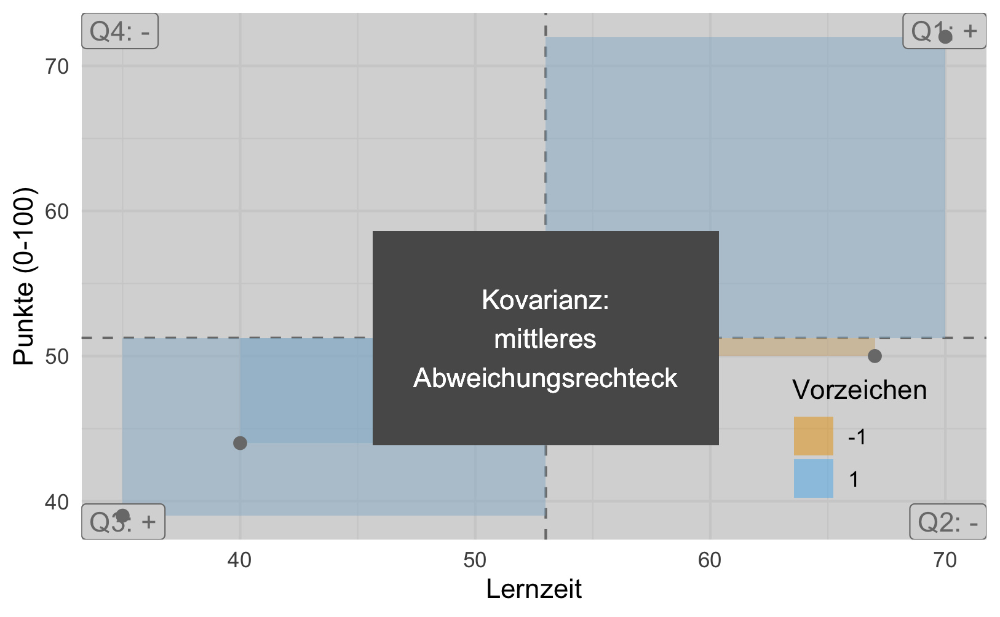
8.3.2 Kovarianz
Definition 8.2 (Kovarianz) Die Kovarianz ist definiert als die Fläche des mittleren Abweichungsrechtecks. Sie ist ein Maß für die Stärke und Richtung des linearen Zusammenhangs zweier metrischer Variablen, s. Abbildung 8.4.\(\square\)
👩🎓 Zu viele Bilder! Ich brauch Zahlen.
👩🏫 Kommen schon!
Tabelle 8.2 zeigt die Werte für die X- und Y-Abweichung und die resultierenden Flächen der Abweichungsrechtecke. Wenn Sie die Werte selber nachrechnen wollen, finden Sie den Noten-Datensatz in der Datei noten.csv.
| id | y | x | x_avg | y_avg | x_delta | y_delta | x_pos | y_pos | cov_sign | xy_area |
|---|---|---|---|---|---|---|---|---|---|---|
| 1 | 72 | 70 | 53 | 51.25 | 17 | 20.75 | TRUE | TRUE | 1 | 352.75 |
| 2 | 44 | 40 | 53 | 51.25 | -13 | -7.25 | FALSE | FALSE | 1 | 94.25 |
| 3 | 39 | 35 | 53 | 51.25 | -18 | -12.25 | FALSE | FALSE | 1 | 220.50 |
| 4 | 50 | 67 | 53 | 51.25 | 14 | -1.25 | TRUE | FALSE | -1 | -17.50 |
Berechnen wir als nächstes das mittlere Abweichungsrechteck, die Kovarianz:
d %>%
summarise(kovarianz = mean(xy_area))Die Formel der Kovarianz lautet, s. Gleichung 8.2:
\[\text{cov(xy)} = s_{xy}:=\frac{1}{n}\sum_{i=1}^n (x_i-\bar{x})(y_i-\bar{y}) = \frac{1}{n}\sum_{i=1}^n dx_i\cdot dy_i \tag{8.2}\]
Gleichung 8.2 in Worten ausgedrückt:
- Rechne für jedes \(x_i\) die Abweichung vom Mittelwert, \(\bar{x}\), aus, \(dx_i\).
- Rechne für jedes \(y_i\) die Abweichung vom Mittelwert, \(\bar{y}\), aus, \(dy_i\).
- Multipliziere für alle \(i\) \(dx_i\) mit \(xy_i\), um die Abweichungsrechtecke \(dx_i dy_i\) zu erhalten.
- Addiere die Flächen der Abweichungsrechtecke.
- Teile durch die Anzahl der Beobachtungen \(n\).
Beispiel 8.3 (Variablen mit positiver Kovarianz)
- Größe und Gewicht
- Lernzeit und Klausurerfolg
- Distanz zum Ziel und Reisezeit
- Temperatur und Eisverkauf\(\square\)
Beispiel 8.4 (Variablen mit negativer Kovarianz)
- Lernzeit und Freizeit
- Alter und Restlebenszeit
- Temperatur und Schneemenge
- Lebenszufriedenheit und Depressivität\(\square\)
Drei Extrembeispiele für Kovarianz-Werte sind in Abbildung 8.5 dargestellt.
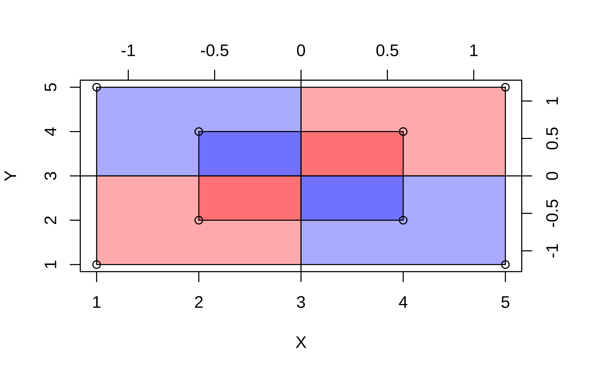
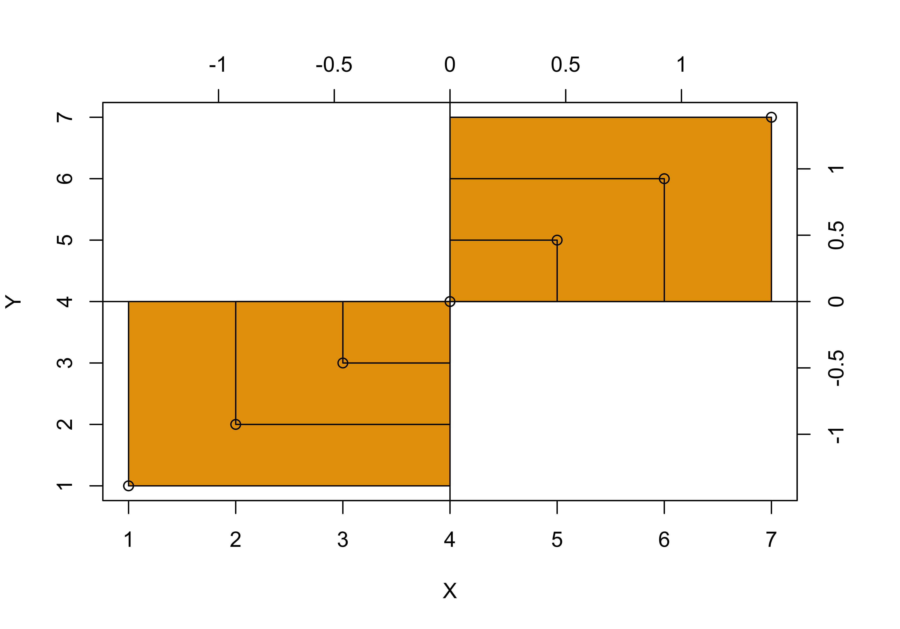
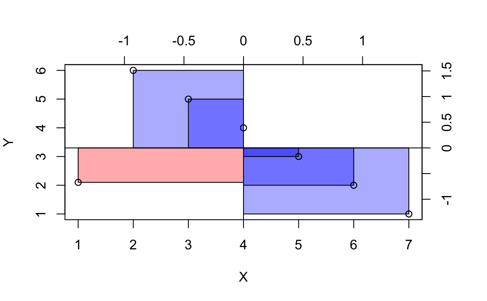
Bei einer Kovarianz von (ungefähr) 0 ist die Gesamt-Fläche der Abweichungsrechtecke5, wenn man sie pro Quadrant aufsummiert, ungefähr gleich groß, s. Abbildung 8.6. Addiert man die Abweichungsrechtecke (unter Beachtung der Vorzeichen: rot = positiv; blau = negativ), so beträgt die Summe in etwa (oder genau) Null.
Damit ist die Kovarianz in diesem Fall etwa (bzw. genau) Null, s. Gleichung 8.3.
\[\begin{align} \sum \left(dX \cdot dY \right) &= 0\\ \Leftrightarrow \varnothing \left(dX \cdot dY \right) &= 0\\ \Leftrightarrow \text{cov} &= 0 \end{align} \tag{8.3}\]

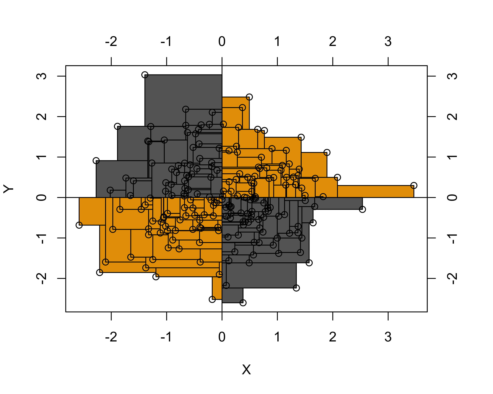
8.3.3 Die Kovarianz ist schwer zu interpretieren
Die Kovarianz hat den Nachteil, dass sie abhängig ist von der Skalierung. So steigt die Kovarianz z.B. um den Faktor 100, wenn man eine Variable (z.B. Einkommen) anstelle von Euro in Cent bemisst. Das ist nicht wünschenswert, denn der Zusammenhang zwischen z.B. Einkommen und Lebenszufriedenheit ist unabhängig davon, ob man Einkommen in Euro, Cent oder Dollar misst. Außerdem hat die Kovarianz keinen Maximalwert, der einen perfekten Zusammenhang anzeigt. Insgesamt ist die Kovarianz schwer zu interpretieren und wird in der praktischen Anwendung nur wenig verwendet.
8.4 Korrelation
8.4.1 Korrelation als mittleres z-Produkt
Der Korrelationskoeffizient \(r\) nach Karl Pearson löst das Problem, dass die Kovarianz schwer interpretierbar ist. Der Wertebereich von \(r\) reicht von -1 (perfekte negative lineare Korrelation) bis +1 (perfekte positive lineare Korrelation). Eine Korrelation von \(r = 0\) bedeutet kein linearer Zusammenhang.
Die Korrelation berechnet sich wie folgt:
- Teile alle \(x_i\) durch ihre Standardabweichung, \(s_x\)
- Teile alle \(y_i\) durch ihre Standardabweichung, \(s_y\)
- Berechne mit diesen Werten die Kovarianz
Teilt man nämlich alle \(x_i\) bzw. \(y_i\) durch ihre Standardabweichung, so führt man mit \(X\) bzw. \(Y\) eine z-Transformation durch. Daher kann man den Korrelationskoeffizienten \(r\) so definieren:
Definition 8.3 (Korrelationskoeffizient r) Der Korrelationskoeffizient \(r\) (nach Pearson) ist definiert als das mittlere Produkt der z-Wert-Paare, s. Gleichung 8.4, vgl. (cohen_applied_2003?). Er ist ein Maß des linearen Zusammenhangs zweier metrischer Variablen. Der Wertebereich ist \([-1;1]\), wobei 0 keinen Zusammenhang anzeigt und \(|r|=1\) perfekten Zusammenhang. \(\quad \square\)
\[r_{xy}=\frac{1}{n}\sum_{i=1}^n z_{x_i} z_{y_i} \tag{8.4}\]
Man beachte, dass eine Korrelation (genauso wie eine Kovarianz) nur für metrische Variablen definiert ist.
Hinweis
Aus dem Korrelationskoeffizienten können Sie zwei Informationen ableiten:
- Vorzeichen: Ein positives Vorzeichen bedeutet positiver (gleichsinniger) linearer Zusammenhang (und umgekehrt: negatives Vorzeichen, negativer, also gegensinniger linearer Zusammenhang).
- Absolutwert der Korrelation: Der Absolutwert6 des Korrelationskoeffizienten gibt die Stärke des linearen Zusammenhangs an. Je näher der Wert bei 1 liegt desto stärker der Zusammenhang.
- \(r = 0\): kein linearer Zusammenhang
- \(r = 1\): perfekter linearer Zusammenhang\(\square\)
Eine Zuordnung des Korrelationskoeffizienten zum Profil des Streudiagramms zeigt Abbildung 8.7.

Die untere Zeile von Abbildung 8.7 zeigt Beispiele für nicht-lineare Zusammenhänge. Wie man sieht, liegt in diesen Beispielen kein linearer Zusammenhang vor (\(r=0\)), obwohl ein starker nicht-linearer Zusammhang besteht.
Übungsaufgabe 8.1 (Korrelationsspiel) Spielen Sie das Korrelationsspiel: Sie Sehen ein Streudiagramm und müssen den richtigen Korrelationskoeffizienten eingeben.\(\square\)
Übungsaufgabe 8.2 (Interaktive Visualisierung der Korrelation) Auf der Seite von RPsychologist findet sich eine ansprechende dynamische Visualisierung der Korrelation. Nutzen Sie sie, um Ihr Gefühl für die Stärke des Korrelationskoeffizienten zu entwickeln.\(\square\)
8.4.2 Korrelation mit R berechnen
Ob der Verkaufspreis (total_pr) wohl mit der Dauer der Auktion (duration) oder mit der Anzahl der Gebote (n_bids) (linear) zusammenhängt? Schauen wir nach! Die Funktion correlation() (aus dem Paket {easystats}) erledigt das Rechnen für uns.
mariokart |>
select(total_pr, duration, n_bids) |>
correlation() # aus `easystats`mariokart |>
select(total_pr, duration, n_bids) |>
correlation() |>
summary()| Parameter | n_bids | duration |
|---|---|---|
| total_pr | 0.13 | -0.04 |
| duration | -0.12 |
p-value adjustment method: Holm (1979)
Sie können auch auf die letzte Zeile, also dem Befehl summary() verzichten. Dann ist die Ausgabe ausführlicher.
8.4.3 Korrelation ≠ Kausation
Eine Studie fand eine starke Korrelation, zwischen der (Höhe des) Schokoladenkonsums eines Landes und (Anzahl der) Nobelpreise eines Landes (Messerli 2012), s. Abbildung 8.8.
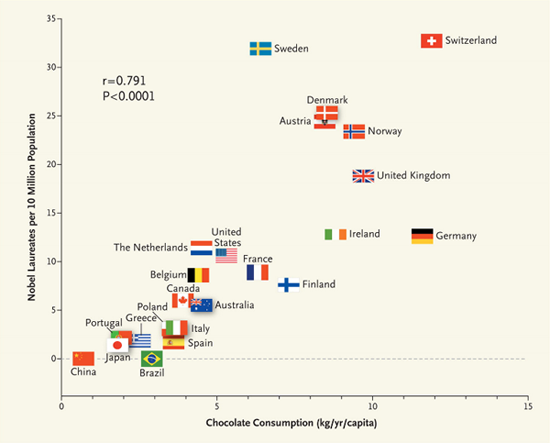
Vorsicht
Korrelation (bzw. Zusammenhang) ungleich Kausation! Korrelation kann bedeuten, dass eine Kausation vorliegt, aber es muss auch nicht sein, dass Kausation vorliegt. Liegt Korrelation ohne Kausation vor, so spricht man von einer Scheinkorrelation.
8.4.4 Korrelation misst nur linearen Zusammenhang
Beispiel 8.5 (Scheinkorrelation) Störche und Babies: Eine Urban Myth besagt: Die Anzahl der Störche pro Landkreis korreliert mit der Anzahl der Babies in diesem Landkreis.
Eine Erklärung für dieses (nur scheinbare) Paradoxon ist, dass die “Naturbelassenheit” des Landkreises die gemeinsame Ursache für Störche ist (Störche lieben Natur) und für Babies ist (die dortige Kultur begünstigt, mehr Kinder pro Frau).
Corona und Glatze:
Macht die Glatze krank? Männer mit Glatze bekommen häufiger Corona (Goren u. a. 2020).
Bald men at higher risk of severe case of Covid-19, research finds7
Eine Erklärung lautet, dass Alter einen Effekt hat auf Glatze (je älter ein Mann, desto wahrscheinlicher ist es, dass er eine Glatz hat) und auf die Schwere des Corona-Verlaufs (ältere Menschen haben deutlich schwerere Corona-Verläufe). \(\square\)
8.5 Wie man mit Statistik lügt
8.5.1 Range-Restriktion
Durch (nicht-randomisierte) Einschränkung (Restriktion) des Ranges einer (oder beider) Variablen sinkt die Stärke (der Absolutwert) einer Korrelation, vgl. (cohen_applied_2003?) und Abbildung 8.9.
Erstellen wir uns dazu zwei Datensätze mit je zwei Variablen, \(X\) und \(Y\) der Größe \(n=100\). Ein Datensatz ist ohne Einschränkung des Ranges und einer mit. \(X\) und \(Y\) seien normalverteilt mit \(\mu=0\) (Mittelwert) und \(\sigma=1\) (Streuung); s. Datensatz d in Listing 8.1. Wir schränken dann den Range von \(X\) ein auf, sagen wir, den Bereich von \([-0.5, .5]\) (Datensatz d_filtered).
set.seed(42)
n <- 1e2
d <-
tibble(x = rnorm(n = n, mean = 0, sd = 1),
e = rnorm(n = n, mean = 0, sd = .5),
y = x + e)
x_min <- -0.5
x_max <- 0.5
d_filtered <-
d |>
filter(between(x, x_min, x_max))
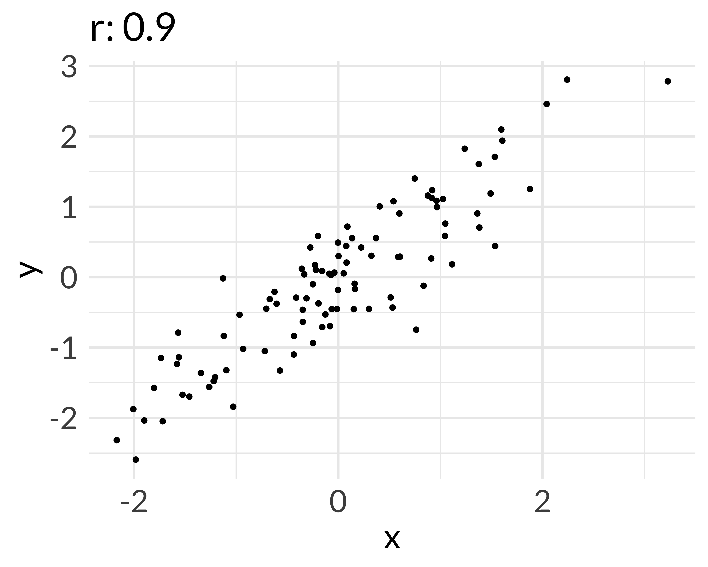
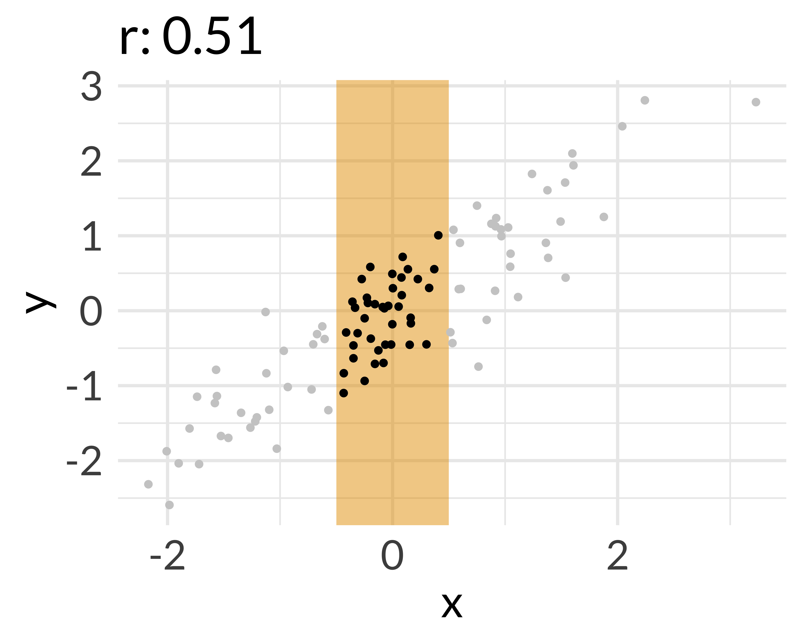
Übungsaufgabe 8.3 (Berechnen Sie die Korrelation) Glauben Sie nicht, prüfen Sie nach! Berechnen Sie die Korrelation von \(X\) und \(Y\) im Datensatz d und d_filtered! \(\square\)
8.6 Fallbeispiel
In Ihrer Arbeit beim Online-Auktionshaus analysieren Sie, welche Variablen mit dem Verkaufspreis von Computerspielen zusammenhängen.
Falls der Datensatz auf Ihrem Computer (am besten in Ihrem Projektverzeichnis in RStudio) abgelegt ist, können Sie die Daten so (in mittlerweile gewohnter Manier) importieren:
mariokart <- read.csv("mariokart.csv")Falls der Datensatz im Unterordner mit Namen “Mein_Unterordner” liegt, so würden Sie folgenden Pfad eingeben:
mariokart <- read.csv("Mein_Unterordner/mariokart.csv")Man beachte, dass solche sog. relativen Pfade (relativ zu Ihrem Arbeitsverzeichnis, d.h. Ihr Projektverzeichnis in R-Studio) nicht mit einem Schrägstrich (Slash) beginnen.
Falls Sie die Daten nicht auf Ihrem Computer haben, können Sie sie komfortable von z.B. der Webseite von Vincent Arel-Bundock herunterladen:
mariokart <- read.csv("https://vincentarelbundock.github.io/Rdatasets/csv/openintro/mariokart.csv")Sie wählen die Variablen von mariokart, die Sie in diesem Fall interessieren – natürlich nur die metrischen – und lassen sich mit cor die Korrelation aller Variablen untereinander ausgeben:
mariokart %>%
dplyr::select(duration, n_bids, start_pr, ship_pr, total_pr, seller_rate, wheels) %>%
cor() %>%
round(2) # Runden auf zwei Dezimalen
## duration n_bids start_pr ship_pr total_pr seller_rate wheels
## duration 1.00 -0.12 0.13 0.27 -0.04 -0.15 -0.30
## n_bids -0.12 1.00 -0.63 0.03 0.13 -0.11 -0.08
## start_pr 0.13 -0.63 1.00 0.03 0.07 0.28 0.16
## ship_pr 0.27 0.03 0.03 1.00 0.54 -0.02 0.05
## total_pr -0.04 0.13 0.07 0.54 1.00 0.01 0.33
## seller_rate -0.15 -0.11 0.28 -0.02 0.01 1.00 -0.15
## wheels -0.30 -0.08 0.16 0.05 0.33 -0.15 1.00
Namensverwechslung (name clash)
Es kann vorkommen, dass Sie zwei R-Pakete geladen haben, in denen es jeweils z.B. eine Funktion mit Namen select gibt. R wird in dem Fall diejenige Funktion verwenden, deren Paket Sie als letztes gestartet haben. Das kann dann das falsche select sein, wie es mir oben in der Syntax passiert ist. In dem Fall resultiert eine verwirrende Fehlermeldung, die sinngemäß sagt: “Hey Mensch, du hast Argumente in der Funktion verwendet, die du gar nicht verwenden darfst, da es sie nicht gibt.” Auf Errisch: Error in select(., duration, n_bids, start_pr, ship_pr, total_pr, seller_rate, : unused arguments (duration, n_bids, start_pr, ship_pr, total_pr, seller_rate, wheels). Eine einfache Abhilfe ist es, R zu sagen: “Hey R, nimm gefälligst select aus dem Paket dplyr, dort”wohnt” nämlich select. Auf Errisch spricht sich das so: dplyr::select(...).\(\square\)
Etwas schöner sieht die Ausgabe mit dem Befehl correlation aus {easystats} aus, s. Tabelle 8.3.
mariokart %>%
dplyr::select(duration, n_bids, start_pr, ship_pr, total_pr, seller_rate, wheels) %>%
correlation() Neben einigen Statistiken, die wir einfach geflissentlich ausblenden (t und p) beinhaltet die Tabelle eine interessante Information: den Schätzbereich für die Korrelation, gekennzeichnet als 95% CI. Grob gesagt können wir diese Information so interpretieren: “Mit 95% Wahrscheinlichkeit liegt der echte Wert der Korrelation in folgendem Bereich.”8
Möchte man nur einzelne Korrelationskoeffizienten ausrechnen, können wir die Idee des Zusammenfassens, s. Gleichung 8.1, nutzen:
mariokart %>%
summarise(cor_super_wichtig = cor(total_pr, wheels))
Vorsicht
Im Falle von fehlenden Werte müssen Sie R aus seiner schüchternen Vorsicht befreien und ermutigen, trotz fehlender Werte einen Korrelationskoeffizienten auszugeben. Das geht mit dem Argument use = "complete.obs" in cor:
mariokart %>%
summarise(cor_super_wichtig = cor(total_pr, wheels, use = "complete.obs"))🧑🎓 Immer so viele Zahlen! Ich brauch Bilder.
Mit dem Befehl plot_correlation aus dem R-Paket {dataExplorer} bekommt man eine ansehnliche Heatmap zur Verdeutlichung der Korrelationswerte, s. Abbildung 8.10.
library(DataExplorer)
mariokart %>%
dplyr::select(duration, n_bids, start_pr, ship_pr, total_pr, seller_rate, wheels) %>%
plot_correlation()
8.7 Vertiefung
Dieser TED-Vortrag informiert zum Thema Scheinkorrelation. Hier finden Sie weitere Beispiele für Scheinkorrelationen.
8.8 Aufgaben
Schauen Sie sich auch mal auf der Webseite Datenwerk9 die Aufgaben zu dem Tag association an.
8.9 Halbzeitquiz
Testen Sie Ihr Wissen mit diesem Quiz zur deskriptiven Statistik (Maße der zentralen Tendenz, Variabilität, Verteilungsformen, Normalverteilung, Korrelation).10
8.10 Fallstudien
Hinweis
Einige der Fallstudien oder Übungsaufgaben können theoretische Inhalte (Konzepte der Statistik) oder praktische Inhalte (R-Befehle) enthalten, die Sie (noch) nicht kennen. In dem Fall: Einfach ignorieren. Oder Sie suchen nach einer Lösung anhand von Konzepten bzw. R-Befehlen, die Sie kennen.\(\square\)
Hinweis
Bitte verstehen Sie die folgende Auswahl an Fallstudien als Auswahl. Es ist nicht nötig, dass Sie alle Fallstudien bearbeiten. Sehen Sie die Fallstudien eher als Angebot zur selektiven Vertiefung und Übung, dort, wo Sie es nötig haben.\(\square\)
8.11 Literaturhinweise
Auch die Korrelation ist ein Allzeit-Favorit in der Statistik; entsprechend wird Ihnen jedes typische Statistik-Buch die Grundlagen erläutern. Schauen Sie doch mal, was Ihre Bibliothek Ihnen zu bieten hat. Wer eine unorthodoxe (geometrische!) Herangehensweise an die Korrelation (und Regression) sucht, darf sich auf eine Menge Aha-Momente bei Kaplan (2009) freuen. Ein schönes, modernes Statistikbuch bietet der Psychologie-Prof Russel Poldrack von der Princeton University (2023); auch dieses Buch ist frei online verfügbar. Tipp: Nutzen Sie die Übersetzungfunktion Ihres Browsers, wenn Sie das Buch nicht in Englisch lesen wollen. Ein Klassiker, wenn auch nicht mehr ganz frisch, ist (cohen_applied_2003?); immer noch sehr empfehlenswert, aber etwas höheren Anspruchs.
8.12 Literatur
auch Skalar genannt↩︎
Visualisierung↩︎
> 🧑🎓 Typisches Lehrerbeispiel!!↩︎
hoffentlich nicht Ihre Geduld↩︎
Bei der Varianz waren es Quadrate, bei der Kovarianz sind es Rechtecke.↩︎
Betrag↩︎
https://www.telegraph.co.uk/global-health/science-and-disease/bald-men-higher-risk-severe-case-covid-19-research-finds/, Abruf 2023-03-24↩︎
Bayesianische Interpretation↩︎